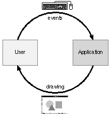
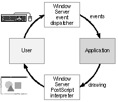
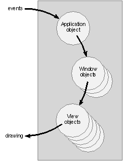
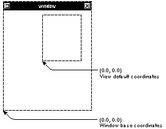

Release 3.3 Copyright ©1995 by NeXT Computer, Inc. All Rights Reserved.
| 5 |
Programming in Objective C
| When you write a program in an object-oriented language, you're almost certainly not doing it alone. You'll be using classes developed by others and perhaps a software kit or two. A kit provides a set of mutually dependent classes that work together to structure a portion, often a substantial portion, of your program.
The NEXTSTEP development environment contains a number of software kits, including: |
| The Application Kit for running an interactive and graphical user interface | ||
| The Database Kit for operating a connection to a database server | ||
| The 3D Graphics Kit for drawing in three dimensions | ||
| The Sound Kit for recording, editing, and playing sounds | ||
| The Indexing KitTMfor managing large amounts of textual data |
| Using a library of kit classes differs somewhat from using a library of C functions. You can pretty much pick and choose which library functions to use and when to use them depending on the program you're designing. A kit, on the other hand, imposes a design on your program (at least on the part the kit is concerned with). When you use a kit, you'll find yourself relying on library methods to do much of the work of the program. To customize the kit and adapt it to your needs, you'll implement methods that the kit will invoke at the appropriate time. These kit-designated methods are "hooks" where your own code can be introduced into the kit design. In a sense, the usual roles of program and library are reversed. Instead of incorporating library code into the program, program code is incorporated into the kit.
This chapter discusses what it's like to write an Objective C program, especially one based on a software kit. It discusses some of the programming techniques that come into play, and, as an example, explains something of how the NEXTSTEP Application Kit works. The final section takes up the question of combining Objective C with C++. |
| Starting Up |
| Objective C programs begin where C programs do, with the main() function. The job of an Objective C main() is quite simple. Its twofold task is to: |
| Set up a core group of objects, and | ||
| Turn program control over to them. |
| Objects in the core group might create other objects as the program runs, and those objects might create still other objects. From time to time, the program might also load classes, unarchive instances, connect to remote objects, and find other resources as they're needed. However, all that's required at the outset is enough structure (enough of the object network) to handle the program's initial tasks. main() puts this initial framework in place and gets it ready to go to work.
Typically, one of the core objects has responsibility for overseeing the program or controlling its input When the core structure is ready, main() sends this object a message to set the program in motion: |
| If the program is launched from a shell and takes direction from the command line, main()'s message could simply tell it to begin. It might also pass along crucial command-line arguments. For example, a utility that reformats files might take a target file name as an argument on the command line. After setting up the objects the program requires, main() could begin the reformatting process by passing this name to one of the objects. | ||
| (In NEXTSTEP, the argc and argv arguments passed to main() are stored in global variables, NXArgc and NXArgv, to make them available to all parts of the program.) | ||
| If the program has no user interface, but exists only to run in the background and serve other applications, main()'s message has it begin listening for remote input. A number of services might be implemented as this kind of background process--for example, a sorting service, a service that checks for spelling errors, a utility that translates documents from one data format to another, or one that compresses and decompresses files. | ||
| If the program is launched from the workspace, not a shell, and presents a graphical interface to the user, main()'s message has it begin responding to user input. |
| Most NEXTSTEP applications belong in this last category. They display windows and menus on-screen, and may have various kinds of buttons to click, text fields to type into, icons to drag, and other control devices to manipulate. Such an interface invites user actions on the keyboard and mouse.
The core group of objects that main() sets up must include some that draw the user interface, and main() must make sure that at least part of this interface--perhaps just a menu--is placed on-screen. (This typically is taken care of as a by-product of loading core objects from an Interface Builder archive.) Once the initial interface is on-screen, the application will be driven not by command-line arguments or even remote messages, but by external events, most notably user actions on the keyboard and mouse. For example, when the user clicks a menu item, two events are generated--a mouse-down event when the mouse button is pressed and a mouse-up event when the button is released again. Similarly, typing on the keyboard generates key-down and key-up events, moving the mouse with a button pressed generates mouse-dragged events, and so on. Each event is reported to the application with a good deal of information about the circumstances of the user action--for example, which key or mouse button was pressed, where the cursor was located, and which window was affected. An application gets an event, looks at it, responds to it, then waits for another event. It keeps getting one event after another, as long as the user produces them. From the time it's launched to the time it terminates, almost everything the application does will derive from user actions in the form of events. The mechanism for getting and responding to events is the main event loop (called "main" because an application can also set up subordinate event loops for brief periods of time). One object in the core group has responsibility for running the main event loop--getting an event, generating a message that initiates the application's response to the event, then getting (or waiting for) the next event. The Application Kit defines an object to do this work; it's an instance of the Application class and is assigned to the global variable NXApp. After creating this object (and other objects in the core framework), the main() function sends it a run message: |
 main()
main()
 {
{
 . . .
. . .
 NXApp = [Application new];
NXApp = [Application new];
 . . .
. . .
 [NXApp run];
[NXApp run];
 [NXApp free];
[NXApp free];
 exit(0);
exit(0);
 }
}
| With the run message, main()'s work is essentially done. The run method puts the application in the main event loop and has it begin responding to events. It remains in the loop until the user quits the application.
While in the main event loop, an application can also receive input from other sources. For example, a music application might receive input from a MIDI (Musical Instrument Digital Interface) keyboard, an application that's hooked up to a telephone line might receive data over the line, and almost any application might receive remote messages from other applications. This kind of remote input is scheduled between events. In some cases (MIDI, for example), it might far outweigh user activity on the computer keyboard and mouse. |
| Using a Software Kit |
| Library functions impose few restrictions on the programs that use them; they can be called whenever they're needed. The methods in an object-oriented library, on the other hand, are tied to class definitions and can't be used unless you create an object that has access to them. The object must be connected to at least one other object in the program so that it can operate in the program network. A class defines a program component; to avail yourself of its services, you need to craft it into the structure of your application.
Nevertheless, for some classes, using a library object is pretty much the same as using a library function, though on a grander scale. You can simply create an instance, initialize it, and insert it into an awaiting slot in your application. For example, NEXTSTEP includes a HashTable class that provides a hashing service that you can take advantage of as needed. In general, however, object-oriented libraries contain more than single classes that offer individual services. They contain kits, collections of classes that structure a problem space and present an integrated solution to it. Instead of providing services that you use as needed, a kit provides an entire program structure, a framework, that your own code must adapt to. It's a generic program model that you specialize to the requirements of your particular application. Rather than design a program that you plug library functions into, you plug your own code into the design provided by the kit. To use a kit, you must accept the program model it defines and employ as many of its classes as necessary to implement the model in your program. The classes are mutually dependent and come as a group, not individually. The classes in a software kit deliver their services in four ways: |
| Some kit classes define "off-the-shelf" objects. You simply create instances of the class and initialize them as needed. The Matrix, ButtonCell, and TextFieldCell classes in the Application Kit are examples of this kind of class. Off-the-shelf objects are typically created and initialized using Interface Builder. | ||
| Some kit objects are created for you behind the scenes; you don't need to allocate and initialize them. Behind-the-scenes objects are usually anonymous; a protocol specifies what messages they can respond to. | ||
| Some kit classes are generic. The kit may provide some concrete subclasses that you can use unchanged and off-the-shelf, but you can--and in some cases are required to--define your own subclasses and complete the implementation of certain methods. | ||
| Sometimes, a kit object is prepared to keep another object informed of its actions and even delegate certain responsibilities to it. The messages the kit object is prepared to send are declared in a protocol. If you implement the protocol in a class of your own design and register an instance of the class with the kit object, your code will be connected to the kit. |
| The last two items on this list--subclassing and delegation--are ways of specializing the kit design and adapting it to the needs of your program. The next sections look in more detail at these two ways of using a kit.
Inheriting from Kit Classes A kit defines a program framework that many different kinds of applications can share. Since the framework is generic, it's not surprising that some kit classes are incomplete or abstract. A class can often do most of the work in low-level and common code, but nevertheless will require application-specific additions. These additions are made in subclasses of the kit class. The point of defining a subclass is to fill in pieces the kit class is missing. This is done by implementing a specific set of methods. The kit designer declares these methods, sometimes in a protocol, but typically in the kit class itself. The subclass simply overrides the kit version of the methods.
Implementing Your Own Version of a Method Most methods defined in a kit class are fully implemented; they exist so that you can invoke the services the class provides. In some cases, these methods should never be changed by the application. The kit depends on them doing just what they do--nothing more and nothing less. In other cases, the methods can be overridden, but there's no real reason to do so. The kit's version does the job. But, just as you might implement your own version of a string comparison function rather than use strcmp(), you can choose to override the kit method if you want to. However, a few kit methods are designed to be overridden; they exist so that you can add specific behavior to the kit. Often, the kit-defined method will do little or nothing that's of use to your application, but will appear in messages initiated by other methods. To give content to the method, your application must implement its own version. It's possible to distinguish four different kinds of methods that you might define in a subclass: |
| Some methods are fully implemented by the kit, and are also invoked by the kit; you wouldn't invoke them in the code you write. These methods exist in the interface for just one reason--so that you can override them if you want to. They give you an opportunity to substitute your own algorithm for the one used by the kit. | ||
| For example, the placePrintRect:offset: method is invoked to position an image on the printed page. The kit version of this method works fine and is rarely overridden. But if you want to do it differently, you can replace the kit version with your own. | ||
| Some methods make object-specific decisions. The kit may implement a default version of the method that makes the decision one way, but you'll need to implement your own versions to make a different decision where appropriate. Sometimes, it's just a matter of returning YES instead of NO, or of calculating a specific value rather than the default. | ||
| For example, Views in the Application Kit are sent acceptsFirstResponder messages asking, among other things, if they can display the user's typing. By default, the View method returns NO--most Views don't accept typed input. However, some View subclasses (such as the Text class) do; they have to override the method to return YES. | ||
| Some methods must be overridden, but only to add behavior, not to alter what the kit-defined method does. When your application implements one of these methods, it's important that it incorporate the very method it overrides. This is done by messaging super to perform the kit-defined version of the method. | ||
| Occasionally, the kit method will have generic code that sets up the specific work to be accomplished in the subclass version of the method, and so must be included with the code you write. | ||
| More often, the method is one that every class is expected to contribute to. For example, Chapter 4 discussed how initialization (init...) methods are chained together through messages to super, and also how it was necessary to implement versions of the write: and read: methods to archive and unarchive instance variables declared in the class. So that a write: message will archive all of an object's instance variables, not just those declared in the subclass, each version of the method begins by incorporating the version it overrides. | ||
| Some kit methods do nothing at all, except return self. These are methods that the kit can't define even in rudimentary form since they carry out tasks that are entirely application-specific. There's no need to incorporate the kit implementation of the method in the subclass version. | ||
| Most methods that are to be overridden in a subclass belong in this group. It includes, among others, the principal methods you implement to draw (drawSelf::) and respond to events (mouseDown: and others). To keep the interface simple, kit classes generally try to isolate the responsibilities of their subclasses in methods unencumbered by superclass code. |
| It's important to note that you're not on entirely on your own when you implement your own version of a method. Subclass methods can often be built from facilities provided in the kit. An event-handling method, for example, can call on other kit methods and functions to do much of the work.
Implementing Methods You Don't Invoke The kit methods you override in a subclass generally won't be ones that you'll invoke yourself, at least not directly. You simply implement the method and leave the rest up to the kit. In fact, the more likely you are to write an application-specific version of a method, the less likely you are to use it in your own code. There's good reason for this. There are really only two reasons for a kit class to declare a method. Methods are provided so that you can either: |
| Invoke them to avail yourself of the services the class provides, or | ||
| Override them to introduce your own code into the kit. |
| If a method is one that you can invoke, it's generally fully defined by the kit and doesn't need to be redefined in your code. If the method is one that you need to implement, the kit has a particular job for it to do and so will invoke the method itself at the appropriate times.
Much of the task of programming an object-oriented application is implementing methods that you use only indirectly, through messages arranged by the kit.
Inheriting the Framework New instances of a subclass are ready to take their place in the network of objects the kit defines. They inherit the ability to work with other objects from the kit. For example, if you define a Cell subclass, instances of the new class will be able to connect with a Matrix just like ButtonCells, TextFieldCells, and other kinds of kit-defined Cell objects. The kit superclass defines a set of outlet connections to other objects and provides a mechanism for setting those connections, sometimes automatically. Instances of the subclass fit into the kit framework as if they were defined in the kit.
Connecting to Kit Objects A kit framework can never be complete. It can cover much of the terrain, but it can't anticipate all the details of every application or what additional structure they'll need. Therefore, kits generally provide ways for you to hook your own objects up to kit objects. This is usually done by implementing an object that can respond to messages declared in a protocol and registering the object with a kit object. For example, several classes in the NEXTSTEP software kits permit you to register a delegate: |
 [myWindow setDelegate:myObject];
[myWindow setDelegate:myObject];
| Delegation is one of the principal ways that the objects you design to do the basic work of your application can be connected to a kit.
Delegation Delegates mainly receive two kinds of messages: |
| Messages that notify the delegate of what the kit object is doing | ||
| Messages that assign some specific task to the delegate |
| Notification messages are easy to recognize in the interface; the methods that respond to them are typically named for the action the kit object took or is about to take, not for what the method will be implemented to do. For example, names like browserDidScroll: or textWillConvert:fromFont:toFont: are typical of notification methods in the Application Kit. The method can be implemented to do anything the application needs to keep current with the activity of the kit object.
Notifications after the fact allow the delegate to coordinate other activities with the actions of the kit object, but they don't give the delegate any control over the kit. For example, a Window object's delegate receives windowDidResize: messages after the user resizes the window. Prior notifications permit the same kind of coordination, but in addition may give the delegate a chance to approve or disapprove of the impending action, or to modify it in some way. For example, a Window sends its delegate windowWillResize:toSize: messages as the user drags an outline of the window to resize it. The message gives the delegate a chance to constrain the size of the window. True delegation messages, those that assign a specific responsibility to the delegate, use a different naming scheme. The methods that respond to these messages are, like most methods, named for what the method is supposed to do, not for what the kit did. For example, a kit object might send a browser:loadCell:atRow:inColumn: message to its delegate when it needs data to display in a browser on-screen, or an app:openFile:type: message when it needs help in opening a file.
Other Kit Outlets Assigning a delegate is just one way of making a connection to a kit object. In the Application Kit, for example, you can also assign owners to Pasteboard objects and targets to control devices (button, sliders, and the like). These different kinds of connections--delegates, targets, owners, and others--name the various kinds of outlet connections that kit objects maintain to the objects you invent. Each specifies the kind of role your object will play in the kit design. Different kinds of outlets have different responsibilities. The pasteboard's owner, for example, is responsible for providing data when it's needed for a Paste operation. A target is entrusted with carrying out the command of a control device. Each kit defines its own group of outlets, plus the methods for setting them. Outlets often can be set graphically within Interface Builder while programming the user interface. Although there are setDelegate: and setTarget: methods, for example, delegates and targets are almost always set in Interface Builder. |
| Programming with the Application Kit |
| Instead of talking about software kits in the abstract, it's helpful to turn to a specific example--the NEXTSTEP Application Kit. Each NEXTSTEP kit covers a certain terrain. For the Application Kit, it's the user interface and the attendant tasks of drawing on the screen, printing, and organizing the interaction with the user. To show the logic of the Kit and of the framework it defines, the following sections start from the ground up. They build a rationale for the kit, then look at what tasks it takes on, how it's structured, and how your own code can be made to fit within that structure.
For this example, it's necessary to shift gears to some extent and examine, in general terms, the architecture of NEXTSTEP applications. What follows is an overview. Don't be concerned about every method or line of code that's mentioned here--there are other manuals that go into greater detail--but concentrate instead on the general concepts introduced, and especially on the division of labor between the Application Kit and the code that you would write.
NEXTSTEP Applications The Application Kit is the basic kit used by all NEXTSTEP applications. It's designed for interactive applications that cooperate with each other in a multitasking environment and present a graphical interface to the user. |
| NEXTSTEP applications cooperate by sharing the screen and other resources, and also by sharing the work. They're able to split up tasks and make use of the services provided by other applications. | ||
| NEXTSTEP applications have a graphical interface that structures the user's interaction with the computer, making it easy and intuitive. Rather than use the command line or a multitude of function keys, NEXTSTEP applications employ software control devices--buttons, scrollers, sliders, and the like--to get information from the user. They're more likely to use graphical devices that the user can directly manipulate, like icons and scrollers, than require indirect or typed instructions. | ||
| NEXTSTEP applications are interactive--they take instructions from the user through the keyboard and mouse and respond visually through the graphical interface. (They can also respond in other ways, but a visual component in always present.) The interaction between the user and the application is immediate and ongoing--like the give and take of a friendly conversation. |
| This kind of user interface must be a fundamental part of each application's design, not just something that's tacked on at the end. The more an application is able to take advantage of the graphical possibilities of the screen and the more effectively it puts the user in charge, the more successful it will be. Thus, in large part, applications need to be designed around the user interface and the two principal tasks it imposes: |
| Getting user input from the keyboard and mouse, interpreting it, and responding to it without delay. | ||
| Drawing the application's interface on the screen and continually updating the display in response to user actions. |
| These can be formidable tasks. While easy and intuitive for the user, an interactive graphical interface can be quite intricate from the programmer's perspective. They demand a lot of time and a lot of code.
The Application Kit is designed to reduce this effort. The Kit takes over much of the user-interface work, so your application doesn't need to be concerned with it at all. For example, it provides ready-made windows and a set of software control devices with built-in code for drawing and responding to user actions. Of course, the Kit can't handle every user action or do all the drawing. If it did, there would be no way for you to develop an application--to put your own interpretation on input from the user or put your own output on the screen. The goal of the Kit is not to constrain what an application can do, but to set up a structure that makes it easy for it to draw and interpret user input. The Kit assumes most of the low-level burden of these tasks, while allowing you complete freedom to construct any kind of interactive application you want. Since getting user input and providing drawing output are fundamental to the design of an application, the way the Kit structures these tasks becomes the core of a basic program structure for the entire application. This structure is built around the event cycle.
The Event Cycle NEXTSTEPapplications are controlled by the actions of the user on the keyboard and mouse. These actions are reported to the application as events--discrete packets of information that record what the user did along with other relevant information (such as where the cursor was located at the time and which window was affected). For example, a key-down event is generated when the user presses a key on the keyboard, and a key-up event when the key is released again. Mouse-down, mouse-dragged, and mouse-up events are generated when the user presses a mouse button, moves the cursor on-screen with the button down, and then releases the button. Each event records one atomic user action. Almost everything the application does, it does on direct instructions from the user in the form of events. This is what's meant when it's said that an application is "driven by events"--the user drives the application. An application can choose just what events it wants to receive and just how to react to them, but the cycle of getting an event, responding to it, then getting another event is universal. Applications invite user actions by the graphical user interface they draw on-screen. An empty text field with a blinking caret, for example, lets the user know it's appropriate to enter text. A button or menu command solicits a click. The knob of a scroller looks like something that might be grabbed and moved along the bar. Once the user acts and an event is received, an application must draw again to keep up its end of the conversation with the user--to provide a visible response to the user's actions. It's useful, in fact, to think of applications drawing for three overlapping reasons, all of them related to the cycle of getting and responding to events. An application draws: |
| To present itself to the user. At start up, an application draws its user interface on-screen, then prepares to receive events. As it runs, it continues to update its user interface in response to events. | ||
| To provide immediate feedback that an event has been received. For example, a button is highlighted and a typed character appears in place. This feedback lets users know that the application is responsive and paying attention. | ||
| To display the results of the user's work. The reason for using a computer is not to experience the user interface or watch buttons highlight, but to get something done. The user's work is captured as data. Only when it displays this data--whether it's an edited document, a scanned image, a graph picturing some information, or the current configuration of pieces on a game board--does the screen become a real "workspace." |
| Thus, at start up, an application draws its interface on the screen. The user chooses what to do and generates an event. The application responds to the event and alters the display, while the user again acts to generate another event.
This cycle of drawing and events is illustrated below: |
|  |
| Figure 22. The Event Cycle
The Window Server All of an application's event input and drawing output flows through a single process--the Window Server. The Server is a low-level process that runs in the background; it doesn't have or need a user interface of its own. Its primary function is to provide client applications with windows where they can draw. It can serve any number of clients; there's just one Server for all the applications running on any given machine. At start up, every NEXTSTEP application establishes a connection to the Window Server. The application and the Server run independently of each other, but maintain a two-way communication channel. As the application runs, it requests the windows it needs, and the Server provides them. Each client application has an independent operating context within the Server and its own set of windows. All of a client application's drawing output is confined within window boundaries; it's impossible to draw directly on-screen outside a window. So the application presents itself--its user interface--within windows, and users do their work within windows. It's natural, therefore, for windows to be the focus of user actions. Consequently, the Window Server plays a principal role for both drawing output and event input: |
| It interprets the client's drawing code and renders it. | ||
| It monitors the keyboard and mouse, and turns the user's actions on those devices into events for the intended application. |
| Putting the Window Server into the event cycle shown in Figure 22 above, the picture looks something like this: |
|  |
| Figure 23. The Window Server in the Event Cycle
Drawing instructions are typically encoded in the PostScript®language. (Three dimensional images from the 3D Graphics Kit are encoded using RenderMan®.) As the illustration above shows, the Window Server includes a PostScript interpreter that receives drawing code and renders it. PostScript code is captured within Objective C by a set of C functions that correspond to PostScript operators. For example, this PostScript code |
 /radius 50 def
/radius 50 def
 10 {
10 {
 0.333 setgray
0.333 setgray
 radius neg radius neg radius 2 mul radius 2 mul rectfill
radius neg radius neg radius 2 mul radius 2 mul rectfill
 0.667 setgray
0.667 setgray
 0 0 radius 0 360 arc
0 0 radius 0 360 arc
 fill
fill
 /radius radius 0.707 mul def
/radius radius 0.707 mul def
 } repeat
} repeat
| can be written in C as follows: |
 float radius = 50.0;
float radius = 50.0;
 for ( i = 0; i < 10 ; i++ ) {
for ( i = 0; i < 10 ; i++ ) {
 PSsetgray(0.333);
PSsetgray(0.333);
 PSrectfill(0.0-radius, 0.0-radius, radius*2.0, radius*2.0);
PSrectfill(0.0-radius, 0.0-radius, radius*2.0, radius*2.0);
 PSsetgray(0.667);
PSsetgray(0.667);
 PSarc(0.0, 0.0, radius, 0.0, 360.0);
PSarc(0.0, 0.0, radius, 0.0, 360.0);
 PSfill();
PSfill();
 radius = 0.707 * radius;
radius = 0.707 * radius;
 }
}
| This code draws a series of ten inset circles and squares that looks like this: |
| In the C version, the control loop and calculations are done in C. PostScript code is delivered to the Window Server only to produce the image. This is accomplished by the PSsetgray(), PSrectfill(), PSarc(), and PSfill() functions, corresponding to the setgray, rectfill, arc, and fill operators.
In addition to the library of single-operator "PS" functions, a utility called pswrap creates C functions that send definable bundles of PostScript code to the interpreter in the Window Server. The following declaration will compile to a single function, drawSquaresAndCircles(), that, when called with the proper argument, will draw the same figure as the code shown above. |
 defineps drawSquaresAndCircles(float initial)
defineps drawSquaresAndCircles(float initial)
 /radius initial def
/radius initial def
 10 {
10 {
 0.333 setgray
0.333 setgray
 radius neg radius neg radius 2 mul radius 2 mul rectfill
radius neg radius neg radius 2 mul radius 2 mul rectfill
 0.667 setgray
0.667 setgray
 0 0 radius 0 360 arc
0 0 radius 0 360 arc
 fill
fill
 /radius radius 0.707 mul def
/radius radius 0.707 mul def
 } repeat
} repeat
 endps
endps
| This version makes the initial radius (one-half the side of the outer square) a parameter of the function. The values passed to setgray and the other operators could also have been parameterized to make the function more generally useful. Note that this version keeps the control loop and all calculations within the PostScript code. Generally, it's more efficient to do that kind of work in compiled C code, and just do the drawing in interpreted PostScript.
Calling either a single-operator function or a pswrap-generated function delivers PostScript code to the Window Server, where it will be interpreted and the image it describes rendered. That's just what Application Kit objects do. The Kit defines objects that draw most of the user-interface devices (such as buttons, sliders, window title bars, and the like) that your application will need. There's also a Text object to draw editable text. Your application can concentrate on drawing just what's unique to it. In addition to functions that wrap around PostScript code, the Kit has other facilities to aid in the drawing code you write. For example, NXImage objects can manage the presentation of images produced from various kinds of data.
Event Loops After setting itself up and placing its initial user interface on-screen, an application begins the cycle of getting and responding to events. In code, the cycle is manifested as the main event loop. In outline form, it looks something like this: |
 BOOL running = YES;
BOOL running = YES;
 while ( running ) {
while ( running ) {
 /* get an event */
/* get an event */
 /* respond to it */
/* respond to it */
 }
}
| As long as an application is running, it stays in the main event loop and continues to get and respond to events as they're generated. It remains in the loop even when it's inactive--when the user turns to another application, for example, or takes a nap. While it waits for events, the application doesn't consume system resources or compete with other applications for processing time.
As part of its response to an event, an application can set up a subordinate event loop for a short period of time. Like the main event loop, a subordinate loop gets and responds to events, but is typically focused on only a small subset of events. The loop puts the application into a temporary mode that's broken by an appropriate user action; subordinate loops are therefore referred to as modal event loops. In the NEXTSTEP user interface, modal event loops are used in only a limited number of situations: |
| For attention panels. When an attention panel is on-screen, the user's actions within the application are limited. Only actions that affect the panel are permitted. The loop is broken when the user dismisses the panel. Like the main event loop, modal loops for attention panels are implemented by the Application Kit. | ||
| For coordinating events. These are typically "spring-loaded" event loops that last only as long as the user holds down a mouse button or a key. For example, when an application gets a mouse-down event while the cursor is over a button or menu command, it sets up a temporary event loop that tracks the movement of the cursor through mouse-dragged events while waiting for a mouse-up event. When the inevitable mouse-up event is received, the loop is broken and the action of the button or menu command is performed (provided the cursor hasn't moved away). | ||
| A coordinating event loop can also be devised to collect a number of similar events, so they can be handled together. For example, while the user is typing, an application might collect a small number of key-down events before rendering the characters on-screen. The loop is broken when the user stops generating the expected type of event (stops typing or hesitates momentarily) or enough events have been collected to handle efficiently as a group. |
| Each modal event loop operates inside another event loop and, ultimately, inside the main event loop. For example, a spring-loaded event loop might operate directly inside the main event loop or inside a modal event loop for an attention panel. When the inner loop is broken, the outer loop will get the next event. The main event loop isn't broken until the application terminates.
The main event loop works identically in all applications; it's common code that can be implemented by the Application Kit. The Kit also defines a number of off-the-shelf objects that run modal event loops, including attention panels and "spring-loaded" event loops that track the cursor. You can invent your own objects to do the same.
Other Input Event loops embody the principle that "applications are driven by events." But applications aren't driven only by events, so event loops must also accommodate other kinds of input: |
| To be cooperative in a multitasking environment like NEXTSTEP, applications need to communicate not just with the user, but with each other; they need to be able to respond to remote messages. For example, an application might receive a message asking it to supply some data in text form to a word processor, or it might get a message from the Workspace Manager requesting it to open another file. | ||
| Some applications might expect input from an external device other than the keyboard or mouse, or might need to read data that accumulates in a file. For example, an application might monitor changes to a central database. | ||
| In addition, an application might want to do something at regular intervals, and so might regard the mere passage of time as sufficient reason to take action. It needs to respond to timed entries, procedures that are called periodically. For example, an application could register a timed entry to animate a display, or to cause files to be saved at regular intervals. |
| An application responds to these other types of input between events. When it's time to get the next event, the application first checks whether any remote messages have been received, any data is waiting at a monitored port or file, or it's time to call a timed entry. If so, the next event (if one is waiting) can be postponed.
Each additional source of input has an assigned priority. The choice of what to respond to next is made by weighing the various priorities against the threshold importance of getting the next event. If an event and a remote message are both waiting for a response, the application could pick the remote message first and postpone the event, or do it the other way around and pick the event first. For example, while in a modal event loop, an application might not want to be interrupted by a remote message that it would be willing to receive between events in the main event loop. Once your application sets the priorities, the Application Kit manages this decision-making process for you. Events are the most important input for almost all applications, both because they're generally more common than the other types of input and because they convey instructions directly from the user. But, like events, the other types of input are also usually due to user activity; they indirectly derive from events. A remote message is typically prompted by an event in another application, data is received at monitored ports and files due to user activity elsewhere, and a timed entry is usually registered because of the events the application receives.
Application Kit Objects The Application Kit defines objects that play critical roles in every part of the event cycle. These objects take over the elementary work of running the main event loop, managing windows, and drawing in them. They structure the event cycle and, in so doing, also structure the application. |
| The Application object runs the application's connection to the Window Server and initiates its main event loop. It gets events from the Server and distributes them to the objects that will respond. | ||
| Window objects correspond to the application's windows. Each object communicates with the Window Server to create and manage a window and responds to events that concern the window. | ||
| View objects draw within windows. Each object controls a particular region within a window and handles events associated with that region. |
| Each application has just one Application object, several Windows, and many Views. The Application object keeps a list of all the Windows, and each Window organizes a set of Views. When an event is received, the Application object decides which window it matters to, and passes it to the Window object for that window. The Window decides which View it concerns and hands it to the View.
This could be the View that's displaying the current selection and handling typing within the key window, and so needs to receive the key-down events that the typing generates. Or it might be a View that drew an icon that the user clicked, and so must get the mouse-down event for the click. When a View gets an event, it responds to it, at least in part, by altering the display--for example, by inserting new characters into the stream of text or highlighting the icon that was clicked. An application in the event cycle looks something like this: |
|  |
| Figure 24. Inside an Application in the Event Cycle
The Application Object Every program must have an Application object to act as its contact with the Window Server. The Application object has four principal tasks: |
| It supervises the entire program, receiving events from the Server and dispatching them to the appropriate Window objects for distribution to their Views. | ||
| It manages all the application's Windows (much as each Window object manages its Views). | ||
| It handles changes to the application's status. It can make it the currently active application, hide and unhide it, and terminate it when the user quits. | ||
| It keeps global information shared by other objects. So that all objects can readily take advantage of its services, it's assigned to the global variable NXApp. |
| The Application class is not abstract; it defines an off-the-shelf object that you can use without subclassing. To coordinate your own code with the Application object, you can assign it a delegate of your own design.
Window Objects Every window the user sees on-screen is managed by a separate Window object. At the lowest level, windows are implemented by the Window Server. Generally, when a new Window object is created, the Server produces the window it will manage. However, to conserve memory and reduce start-up time, you can delay creating the window until it's placed on-screen; you can also arrange for the Window object to destroy the window when it's removed from the screen and get a new one when it's needed again. So it's possible for a Window object to be temporarily without a window and to be paired, at various times, with a variety of different window devices. The object corresponds to the user's conception of a window, not necessarily to its lower-level implementation. The Window object takes care of drawing the window's title bar and frame, and it responds to user actions that move the window, miniaturize and close it. It handles all window-specific communication with the Window Server. In addition to the Window class, the Application Kit provides a number of more specific classes that inherit from Window: |
| Some, such as Panel, Menu, and PopUpList, provide the specialized form and behavior expected of panels, menus, and pop-up lists in the user interface. But their specific contents can be set by the application. | ||
| Others, such as FontPanel and OpenPanel, have fixed contents and fulfill specific roles in the user interface. |
| Instances of the Window class, on the other hand, are more generic; they can be assigned any content the application requires. Typically, they're used to display the work of the user, such as text, graphics, a game board, or a form for entering information in a database.
You give content to a Window by assigning it Views. Each Window contains a set of hierarchically arranged Views; you can place a View anywhere in the hierarchy. At the top of the hierarchy is the content view, which fills the entire content area of the window inside the frame and title bar. Other Views are in charge of smaller areas (such as a particular text field or scroller), or larger areas (such as an entire document) that are clipped to the visible area within the window. Like the Application object, Windows can be taken off-the-shelf and used without subclassing, though you might define a subclass of Panel (Window's subclass) to set up a particular kind of panel. To connect any Window object (including a Panel, a Menu, or a PopUpList) with application-specific code, you can assign it a delegate. Other kinds of Windows inherit the ability to have a delegate from the Window class.
Views Views are the objects in charge of drawing and handling keyboard and mouse events. Each View owns a rectangular region associated with a particular window and is responsible for drawing one part of a window's contents. It produces images within its rectangle--typically by calling C functions that wrap around PostScript code--and responds to events associated with the images it draws. Its drawing is clipped to the rectangle. Views adopt coordinate systems that are convenient for the drawing and event handling they do. Typically, the coordinate origin is at the lower (or upper) left corner of the View rectangle. This is illustrated in the figure below: |
|  |
| Figure 25. A View in a Window
Views can be moved and resized, much as windows can. Each View is part of a hierarchy that includes all the Views associated with the window. One View can be made up of other Views. The View class is abstract. It implements the overall mechanism for drawing and event handling--organizing the hierarchy of Views, making sure they're in focus before they draw, getting events to the correct View, and so on--but the specific content of methods that draw and respond to events is left up to the application. They have to be implemented in subclasses. The objects defined by View subclasses fall into three major groups: |
| Views that display data and enable the user to change and manipulate it. The Views that display editable text for a word processor or images for a graphics editor fall into this group, as do the Views that display data in a spreadsheet or the game board for a chess program. | ||
| Views that capture instructions from the user and pass them on to other objects. Views that implement control devices like buttons, sliders, and text fields belong in this group. Their job is to interpret a user action and translate it into a more specific instruction for the application. | ||
| Views that are used in conjunction with other Views, either to enhance or to regulate the display. This group includes Views that scroll other Views, split the display into two or more resizable sections, or simply enclose other Views within a frame. |
| Views that belong to the first group are wholesale consumers of events; they display the direct results of the user's actions. Views in the second group act as intermediaries for actions that ultimately are intended to affect other objects. (Because of their importance to program structure, these Views are discussed in a little more detail under "Controls" below.) Views in the third group give users some control over what they see on-screen.
The Application Kit defines off-the-shelf Views in each group--the Text object in the first group, Matrix, Form, and other controls in the second, and ScrollView, ClipView, and others in the third. However, most programs need to add to these objects with their own customized View subclasses. Unlike Windows and the Application object, Views don't have delegates (though you could implement a View subclass that had one). Since you must define a View subclass to hold application-specific code anyway, any coordinating code that would otherwise be placed in the delegate can go in the subclass instead.
Fitting into the Event Cycle The Application, Window, and View classes set up a basic framework for handling the application's end of the event cycle. The application must fill in this framework by giving it specific drawing and event-handling content. You may also need to coordinate the activities of your own objects with the objects defined in the kit.
Handling Events Events are delivered to Views in messages named after the event. For example, a mouse-down event is delivered as a mouseDown: message and a key-down event as a keyDown: message. Each message carries a pointer to a record of the event (a structure of type NXEvent). To handle an event, a View must have a method that can respond to the event message that delivers it. Since each application, and each kind of View, responds to events differently, the implementation of these methods is left to View subclasses. Methods that respond to event messages sometimes set up modal event loops. For example, to coordinate a mouse-down event with the subsequent mouse-up event, or to track the cursor while the user holds the mouse button down, a mouseDown: method might get mouse-dragged and mouse-up events directly from the Application object. The modal loop is broken when the mouse-up event arrives. Such a method might look something like this: |
 - mouseDown:(NXEvent *)thisEvent
- mouseDown:(NXEvent *)thisEvent
 {
{
 int shouldLoop = YES;
int shouldLoop = YES;
 int oldMask;
int oldMask;
 NXEvent *nextEvent;
NXEvent *nextEvent;
 /* Make the initial response to the mouse-down event here. */
/* Make the initial response to the mouse-down event here. */
 oldMask = [window addToEventMask:NX_MOUSEDRAGGEDMASK];
oldMask = [window addToEventMask:NX_MOUSEDRAGGEDMASK];
 while ( shouldLoop ) {
while ( shouldLoop ) {
 nextEvent = [NXApp getNextEvent:(NX_MOUSEUPMASK |
nextEvent = [NXApp getNextEvent:(NX_MOUSEUPMASK |
 NX_MOUSEDRAGGEDMASK)];
NX_MOUSEDRAGGEDMASK)];
 switch ( nextEvent->type ) {
switch ( nextEvent->type ) {
 case NX_MOUSEUP:
case NX_MOUSEUP:
 shouldLoop = NO;
shouldLoop = NO;
 break;
break;
 case NX_MOUSEDRAGGED:
case NX_MOUSEDRAGGED:
 /* Track the position of the cusor as *
/* Track the position of the cusor as *
 * reported in mouse-dragged events here. */
* reported in mouse-dragged events here. */
 break;
break;
 default:
default:
 break;
break;
 }
}
 }
}
 /* Respond to the mouse-up event that broke the loop here. */
/* Respond to the mouse-up event that broke the loop here. */
 [window setEventMask:oldMask];
[window setEventMask:oldMask];
 return self;
return self;
 }
}
| Briefly, this method responds to a mouse-down event by resetting the window's event mask to include mouse-dragged events. It then sets up a subordinate event loop that looks only for mouse-dragged and mouse-up events. While waiting for the mouse-up event that will break the loop, it tracks the position of the cursor through the mouse-dragged events it receives. (All of the programming elements used in this example are defined in the Application Kit and documented in the NEXTSTEP General Reference.)
Such a method might respond to a click by first highlighting the image that was clicked (on the mouse-down event) then taking the required action (on the mouse-up event). Or it might continually update the position of an image the user is dragging, or highlight a range of text as the user drags over it. The Application Kit's event-handling mechanism makes sure the event message gets to the View. All the View subclass needs to do is implement the method.
Drawing Views draw at two different times and in two different ways. They draw proactively to present themselves to the user (that is, to present what the display within the View rectangle currently looks like) and reactively in response to events. Reactive drawing is temporary--the highlighting of a button while the cursor is over it or of text as the user drags across it. It gives immediate feedback to the user. Proactive drawing is more permanent. It can change as the result of events, of course, but it doesn't track the user's action. For example, as the user drags to select a range of text, the amount of highlighted text changes as the cursor moves. This drawing reacts to the movement of the cursor as reported in mouse-dragged events. When the user releases the mouse button to finish the selection, the text stays highlighted. The highlighting has become an inherent part of the text display (at least until the next event), and part of what the View will proactively present when asked to display itself. Reactive drawing happens in methods that respond to event messages, such as the mouseDown: method illustrated above. Proactive drawing happens as the result of display messages. A View can be asked to display its contents at any time. For example, a View that draws editable text would receive a display message when its window first comes on-screen. Later it might receive display messages when the text is scrolled, after the user makes some editing changes, or when the image is magnified. The Application Kit's display mechanism makes sure that Views receive display messages when they need to refresh their images on-screen. However the Kit can't know what image to draw. To do the actual drawing, a display message invokes the drawSelf:: method of each View being displayed. Every View is required to supply its own drawSelf:: method to proactively present itself to the user. Before sending a drawSelf:: message to a View, the Kit brings the View into focus (makes its coordinate system the current coordinate system for drawing). The message itself passes the View two arguments specifying the regions where it's expected to draw. These regions might be smaller that the View rectangle; by paying attention to them, drawSelf:: can avoid generating unneeded drawing instructions. A View can draw using wrapped PostScript code, as discussed earlier under "The Window Server," or it can use the imaging facilities provided in the NXImage class, or even draw in three dimensions using the 3D Graphics Kit. The 3D Kit defines a framework for building 3D images and presenting them within a View. A View can also divide its drawing area into small sections and put another object in charge of each section. This is exactly what a Matrix does; it uses Cell objects to draw and handle events for it. A Matrix is a kind of View, so it can take care of all external relations--positioning itself relative to other Views, getting events, setting up a coordinate system for drawing, and so on. The Cells take care of internal matters. When the Matrix receives a display message, its drawSelf:: method sends drawSelf:inView: messages to the Cells. When it gets a mouse-down event, its mouseDown: method tracks the cursor over the Cells and informs the Cell the cursor is pointing to.
Controls Event messages deliver the user's instructions directly to Views. However, because events are closely tied to hardware devices--the keyboard and mouse--there can be but a handful of different event types. Events alone don't give an application much information about the user's intentions. The user interface, therefore, needs to establish well-understood paradigms for interpreting events. In text, for example, a key-down event for a backspace deletes the previous character, other key-down events insert characters into the stream of text, double-clicking selects a word, and so on. Graphical user interfaces often borrow paradigms from the real world by emulating hardware devices in software. It's not possible (or at least not very practical) to attach a lot of control panels with buttons, knobs, sliders and other devices to the computer alongside the keyboard and mouse. But it is possible to provide those controls on the screen where they can be manipulated indirectly through mouse and keyboard events. It's the job of software control devices to interpret events and ask other objects to respond to them. Graphically, a control presents the user with an image of a recognizable device that can be manipulated with the keyboard and mouse--a button that can be pressed, a slider with a knob that can be dragged, a text field where data can be entered. Functionally, it translates the event messages it receives into application-specific action messages for another object. The object that receives an action message is the control's target. The Application Kit defines several standard control devices. Most are implemented as Views, others as Panels. In a Matrix, each ButtonCell or SliderCell might be thought of as a separate control, or the whole Matrix might act as an independent control device. The Kit lets you set the target of a control, |
 [myDevice setTarget:anObject];
[myDevice setTarget:anObject];
| and also the selector of the action message: |
 [myDevice setAction:@selector(dimLights:)];
[myDevice setAction:@selector(dimLights:)];
| There's a limited set of events, but a virtually unlimited number of action messages.
In some cases, the target might be an object defined in the Kit. The Text object, for example, can respond to copy:, paste:, and selectAll: action messages, among others. In most cases, however, you'll need to define the target object and implement a methods to respond to the action messages it receives. Action messages take a single argument, the id of the object that sends the message. If a target needs more information to accurately respond to an action message, it can send a message back to the control requesting the information it needs. For example, if a target receives a changeName: message from a Matrix, it can send a stringValue message back to the Matrix to find the name the user selected. Assigning a target and action message to a control device gives it specific meaning. It's something like buying a generic switch at the hardware store and hooking it up to a particular piece of equipment in your home. Using kit-defined controls, you can assemble most of your application's user interface from off-the-shelf objects. The objects you design to do the basic work of your application can be connected to the user interface by being made targets of controls. Interface Builder lets you set targets and actions graphically. You can name your own action methods while you design the user interface, then implement the methods later.
Coordinating with the Application and its Windows Much of the activity of an application centers on the Application object, which represents the application as a whole, and on Window objects, which represent each of the windows the application uses. To coordinate other parts of the program with these objects, you can assign them a delegate and implement methods that the Application and Window classes declare in informal protocols. You can select which messages you want the delegate to receive; a message is sent only if the delegate implements a method that can respond. Most methods implemented by Window and Application delegates respond to simple notifications. For example, when the user moves a window, the Window's delegate can be notified with a windowDidMove: message. Applications mostly don't care where their windows are located on-screen, but they can take note of the new location by implementing this method. When the window becomes the key window (the window the user is about to work in and the one marked by a black title bar), the delegate is sent a windowDidBecomeKey: message, and when another window takes over as key window, it gets a windowDidResignKey: message. The Window object takes care of all the required changes when a window gains and loses key-window status (such as bringing the window to the front of the screen and highlighting and unhighlighting its title bar), but the delegate can take note of these status changes by implementing these methods. The Application object can send its delegate a variety of messages. Many are pure notifications. For example, just after it finishes all its initialization tasks and before it enters the main event loop, the Application object sends its delegate an appDidInit: message. When the application becomes the active application (the one the user is about to work in), the delegate is sent an appDidBecomeActive: message and, if it was hidden, an appDidUnhide: message. When the application is hidden (its windows removed from the screen), the delegate is sent an appDidHide: message and an appDidUnhide: message when it returns to the screen. When the user quits the application, the delegate gets an appWillTerminate: message. These messages give you a chance to coordinate with user actions. For example, appDidInit: could open an empty window for the user to work in, if the application normally opens and displays a file but the user launched it by double-clicking an application icon rather than a file icon. If quitting would destroy some of the user's work, appWillTerminate: could put up an attention panel reminding the user of that fact, then return nil to prevent the termination if the user cancels the Quit command. Some messages to the Application object's delegate assign it specific tasks. For example, if the application receives a remote message asking it to open a particular file, the Application object will determine whether the application is able to open another file and, if it is, find the file and pass its pathname to its delegate in an app:openFile:type: message. The Application object can't itself open the file and display its contents in a window. Different applications store their data differently. Being generic, the Application Kit can't know about application-specific data formats and conventions. Therefore, when it receives a request to open a file, it sends its delegate an app:openFile:type: message. The delegate can implement this method to open the file, create a Window and a View, and display the contents of the file on-screen. See the NEXTSTEP General Reference manual for more detailed information on these methods, their arguments, and return values. |
| Subclass Clusters |
| There's usually a one-to-one correspondence between concepts in the program design and class definitions. Matrices are defined by the Matrix class, windows by the Window class, and so on. However, given the basic tenets of object-oriented programming, there's no reason why a single conceptual "object" can't be implemented in more than one class. This possibility follows from the fact that: |
| A class interface lies in its methods. The data structure it defines is a matter of implementation only; it should never be of much concern to anyone who uses the class. | ||
| Different classes can have different implementations of the same method. |
| It shouldn't be surprising, therefore, to find a group of classes that have differing, and alternative, implementations of the same interface. Each implementation is optimized for a different set of circumstances. Instead of a program component being implemented in just one class, it's implemented in a cluster of classes.
To keep differences between classes in the cluster a matter of implementation only, it's important that they all share the same interface. Typically, all the implementing classes are grouped under an abstract class that declares their common interface. Program users can regard an instance of any class in the cluster as if it was an instance of the abstract class. A cluster of classes can be used to optimize data storage. Suppose, for example, that your program will make extensive use of an object with a long list of instance variables. Some variables will be used frequently, but many are for specialized situations that rarely come up. Perhaps some variables declared as doubles will most often hold small integers, but they must be declared as floating point numbers for the exceptional case. Moreover, because there will be many instances of this kind of object in your program, you're concerned with the amount of memory they'll consume. In this circumstance, you might save memory by implementing a cluster of classes instead of a single class. An abstract class would declare a common interface that all its subclasses would adhere to; it would declare no instance variables of its own. One subclass could declare a small subset of instance variables sufficient to handle simple cases. It would have chars or shorts instead of doubles and avoid some of the more esoteric fields that would be infrequently used. Other subclasses could be optimized for special circumstances. One subclass, of course, would have to provide the full set of instance variables that you originally contemplated. Each subclass would override superclass methods and implement them in a way that's appropriate for its particular kind of data storage. A cluster of classes can also be used to optimize methods for different patterns of usage. For example, suppose that you want to define an interface for data storage and retrieval. The way you'd implement the methods would vary depending on the anticipated size of the data elements and the number being stored. In this circumstance, you could provide more than one implementation of the interface, optimizing each for a particular size and amount of data. The choice of which implementation (which subclass in the cluster) to use can be handled in a variety of ways. Allocation and initialization methods in the superclass might choose the subclass that best fits the circumstances and create an instance of that class--trying always for instances that occupy as little memory as possible and that have access to the most efficient algorithms for the data. A subclass cluster obviously works best for objects that, once initialized, are rarely or never modified. However, if an instance ever needs to change its implementation to that of another subclass (one that can store more information, for example), the change might be made almost automatically. A special "copy" method would allocate an instance of the alternative class, initialize and return it. The original instance could then be freed. Subclass clusters take to heart the idea that what matters most about an object is its method interface, not its implementation. By keeping the same interface for an assortment of alternative implementations, they serve to simplify the overall interface and make it easier to understand. Instead of a variety of different data-storage schemes, for example, there's just one, with a variety of different implementations. |
| Using C++ with Objective C |
| The Objective C language is conceived as a set of extensions to a base language, which happens to be C. These extensions don't alter the semantics of the base language; they simply add a few syntactic constructions to give it an object-oriented capability. Other programming languages may similarly be made "Objective," as long as any syntactic conflicts between the base language and the extensions are properly handled.
NeXT has taken the logical step and added the Objective C extensions to C++. Objective C and C++ can be combined in the same source file and compiled together. With C++ as the base for the Objective C extensions, you can mix features from both languages, using whichever ones are appropriate for the task. For example, you can take advantage of Objective C's dynamic binding and still use C++'s stronger type checking and compile-time binding as needed. Modules using features from both languages can translate between modules written in "straight" C++ and Objective C code. NeXT's primary goal in integrating the C++ and Objective C programming languages is to make it possible for you to use an existing base of C++ code with the NEXTSTEP software kits. You can also take advantage of this integration to write mixed code if you have a strong need for some features of the C++ language while programming in Objective C.
Writing Mixed Code NeXT's C++ compiler allows C++ and Objective C expressions to be mixed in almost any manner. For example, Objective C messages can be sent within the member functions of C++ classes, and C++ member functions can be called within Objective C methods. Objects defined in either language can create and use objects defined in the other language; a C++ class can declare an id as a data member, while an Objective C class can declare a C++ object as an instance variable. An Objective C message can pass a C++ object as an argument, and a C++ function can take an Objective C object as an argument. However, classes defined in each languages retain their own character. You can't define an hybrid object. Objective C messages can be sent only to Objective C receivers, and C++ member functions are called only through C++ objects. A class defined in one language can't inherit from a class defined in the other language. Moreover, operators specific to C++ can't be applied to Objective C objects. It won't work, for example, to use the C++ new and delete operators to allocate and free Objective C objects. When mixing C++ and Objective C code, the keywords of both languages should be respected. In most cases, there's no problem since both languages derive from C and most keywords are shared. However, the C++ keyword new is also a common method name in Objective C. To handle this potential conflict, the compiler allows an Objective C method to have the same name as a C++ keyword and decides which is which based on context. For example, if "new" appears outside square brackets, it's treated as the C++ keyword for allocation from the free store; if it appears within square brackets in the position of a message name, it's treated as such. It's even legal to use "new" within a message expression as a C++ keyword: |
 [anObject useCPlusPlusObject:new cPlusPlusClass];
[anObject useCPlusPlusObject:new cPlusPlusClass];
| Since this style of code can be hard to read, it's not recommended that you use it.
Bridge Classes A common method of mixing C++ and Objective C code is to write most modules purely in one language or the other, and then connect them by creating compound "bridge" objects--one defined as an Objective C object containing a C++ object as an instance variable, and if needed, a corresponding C++ object containing an Objective C object as a data member. The Objective C object responds to messages by calling one of the C++ object's member functions, and the C++ object implements its member functions to send messages to its Objective C counterpart. If the communication must be two-way, the C++ class and the Objective C @class declarations can be used to avoid circular references in header files. When a project is structured this way, only the bridge classes need to contain both Objective C and C++ expressions. This reduces the potential for conflicts and makes the rest of the source code easier to read. Suppose, for example, that a project written primarily in the Objective C language needs to use a C++ object for some of its calculations. A special Objective C class can be defined to translate Objective C messages into C++ function calls. If the Objective C object stores the C++ object as an instance variable called calculator, one of its methods might look like this: |
 - (int)calcInt:(int)anInt withFloat:(float)aFloat
- (int)calcInt:(int)anInt withFloat:(float)aFloat
 {
{
 return calculator.calcIntWithFloat(anInt, aFloat);
return calculator.calcIntWithFloat(anInt, aFloat);
 }
}
| Similarly, a C++ class could be implemented to use an Objective C object for displaying information to the user. If the C++ object stores the Objective C object as a data member called displayer, one of its member functions might look like this: |
 void collaborator::showResult(char *aString)
void collaborator::showResult(char *aString)
 {
{
 [displayer showResult:aString];
[displayer showResult:aString];
 return;
return;
 }
}
| Using Objective C Libraries with C++ Code
Files written in C++ that use standard C libraries must use an extern linkage directive when including header files for those libraries, for example: |
 extern "C" {
extern "C" {
 #include <stdio.h>
#include <stdio.h>
 . . .
. . .
 }
}
| Similarly, C++ files that include Objective C header files require the "Objective-C" language to be specified (note that this form of the name is hyphenated): |
 extern "Objective-C" {
extern "Objective-C" {
 #import <objc/Object.h>
#import <objc/Object.h>
 . . .
. . .
 }
}
| When Objective C is added to C++, the meaning of the C++ linkage directive is slightly different from its meaning in standard C++. Normally, the linkage directive merely specifies that the code in the directive's scope is to be linked according to rules defined for the named programming language; the code doesn't actually have to be written in the language specified. However, when the specified language is "Objective-C," all the code within the scope of the directive must be legal Objective C.
Run-Time Sequencing The Objective C language uses an extensive run-time system to support its dynamic allocation, typing, binding, and loading. C++, on the other hand, needs very little run-time support. Statically declared C++ objects are initialized before the Objective C run-time system is. For this reason, C++ code should not refer to Objective C objects in static initializers or constructors. Doing so will result in launch-time errors. |